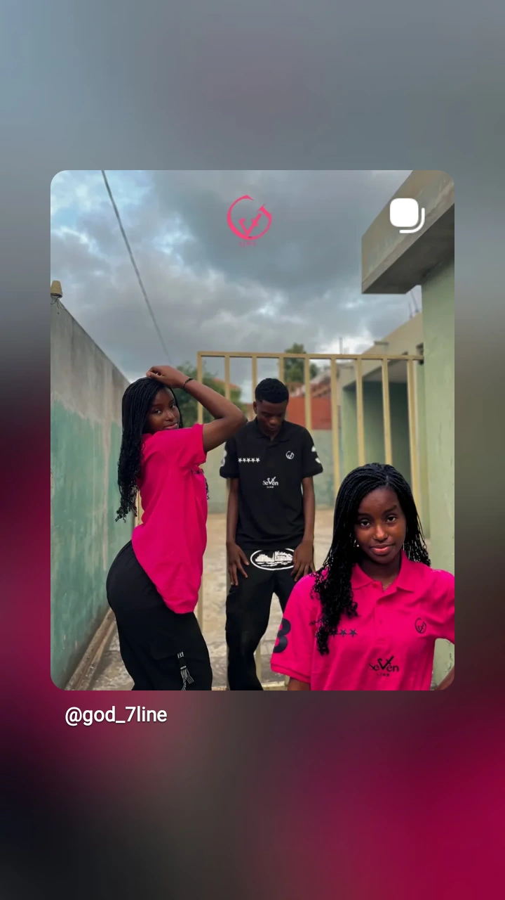

Direcção
Deus esteve presente em cada caminho, nos fáceis e nos difíceis.
A NOSSA HISTÓRIA / DESDE 2025

Algumas linhas foram tortas. Outras, rectas. Em todas elas, Deus guiou o caminho.
19 JULHO / 2025
A God Seven Line nasceu em Moçambique depois de várias etapas que se tornaram sete linhas. Cada uma marcou a nossa história e ajudou a construir a marca que somos hoje.
O mais importante é que algumas linhas ainda não foram escritas. A história continua contigo, em cada peça e em cada ideia que ganha vida.
Deus esteve presente em cada caminho, nos fáceis e nos difíceis.
O número sete representa perfeição, propósito e ciclos completados.
Cada linha mostra um caminho vivido e uma nova história por escrever.
O QUE NOS MOVE
01Identidade Peças para quem não tem medo de se destacar.
02Qualidade Algodão, dry fit e tintas feitas para durar.
03Comunidade Uma marca local construída com quem a veste.
04Futuro Novas linhas, uma loja física e histórias além de Moçambique.
FAZ PARTE DA NOSSA HISTÓRIA